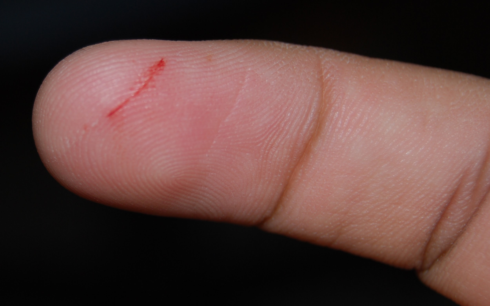
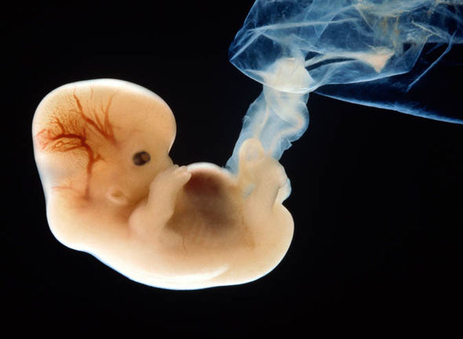
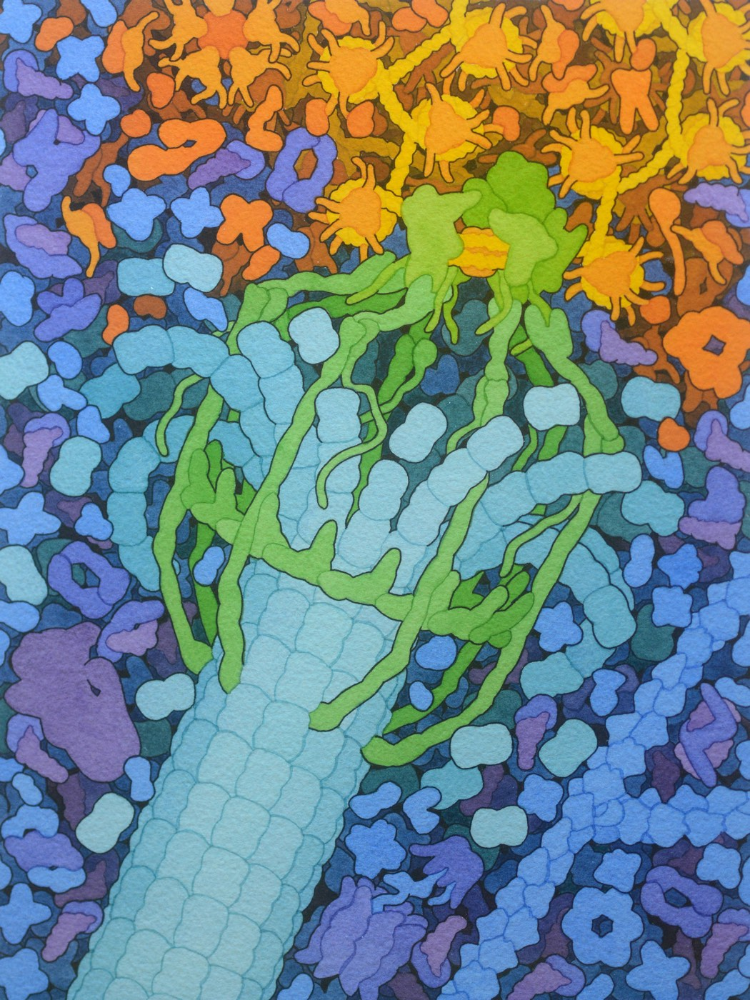
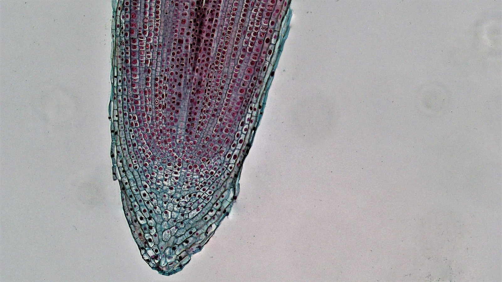
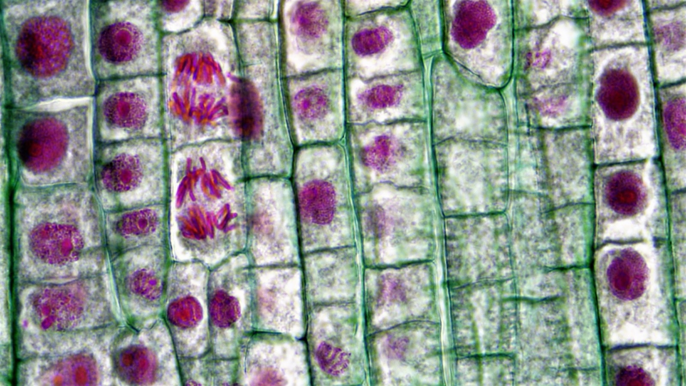
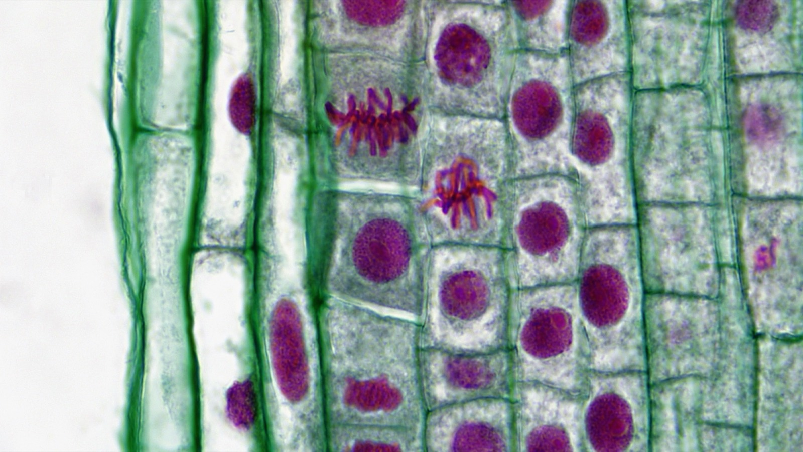
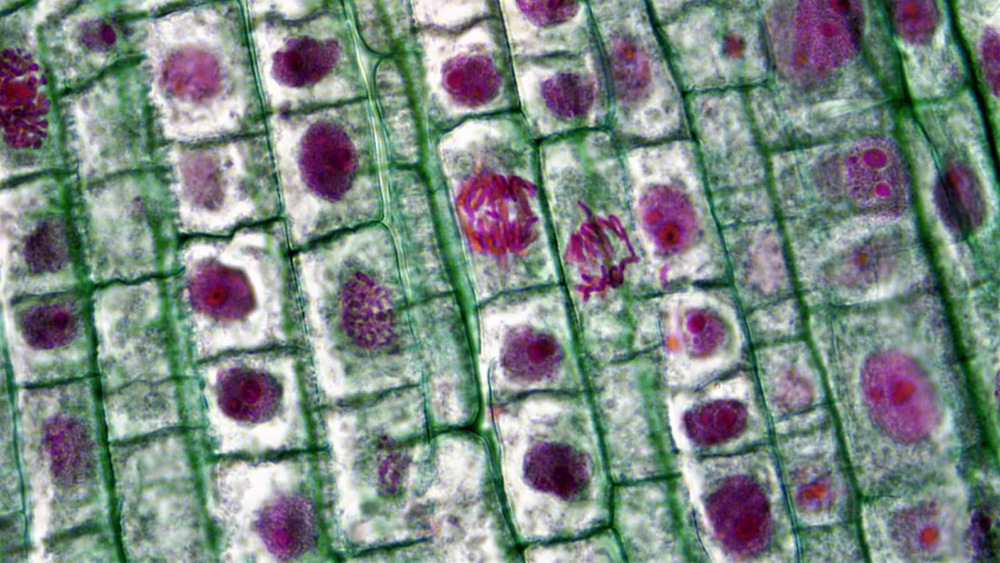

4.1 Copying a Cell
The unit overview left you with a single cell and about forty-five doublings to get from it to a whole body. This chapter is one of those doublings, in detail — how a cell copies three billion base pairs and then splits them so precisely that both daughters get a complete set, and how you can watch it happening in a dead, stained onion root.
Why cells divide at all
Three reasons, and it is worth having all three, because most people only ever remember the first.
- Growth. You are bigger than you were. Not because your cells got bigger — mostly because there are more of them.
- Repair. Cut your finger and the gap closes. It closes because cells at the edges divide until the two sides meet.
- Replacement. This is the one people miss. You are losing cells constantly — skin, gut lining, blood — and replacing them at a rate of roughly three to four million cells every second, right now, without thinking about it. Most of the cell division happening in your body has nothing to do with growing.


![Three panels showing the three reasons cells divide. In every panel, ordinary cells are peach and cells in the middle of dividing are teal, each pinched in the middle with a nucleus in each half. Panel one, growth: a small child's silhouette with an arrow to a taller teenager's silhouette, each with a magnified circle of cells beneath; the cells are the same size in both, but the teenager's circle is packed with more of them, including two dividing cells. Caption: more cells, not bigger cells. Panel two, repair: a cross-section of skin with a V-shaped cut; the cells lining both edges of the cut are dividing, and arrows point inwards as the two sides grow towards each other. Caption: cells at the edges divide. Panel three, replacement: a cross-section of skin in layers; the bottom row contains the dividing cells, cells become flatter and paler towards the top, and flakes of dead cells lift away from the surface, with an arrow running upward along the side. Caption: new cells made below, old cells shed above.](../images/u4/why-cells-divide.jpeg)
There is a fourth reason, and it belongs to the whole unit rather than this chapter: reproduction. For a bacterium, dividing is reproducing. For you, the cells that make the next generation are made by a different kind of division, and that is Chapter 4.5. Keep the two apart in your head from the start: mitosis builds and maintains a body; meiosis makes gametes.
The cell cycle: mitosis is the short part
A cell that is going to divide does not spend most of its time dividing. It spends most of its time getting ready, and the whole repeating sequence of preparation and division is called the cell cycle.
The cycle has two unequal halves. Interphase is the long one — growing, working, and copying the DNA. The mitotic phase is the short one — separating the copies and splitting the cell.
Each half has parts, and the letters are worth learning now, because the rest of this unit uses them without explaining them again. The G stands for gap: when the phases were named in the 1950s, G1 and G2 were simply the gaps either side of DNA copying, when nothing measurable seemed to be happening. Plenty is.
| Phase | Part of | What the cell is doing |
|---|---|---|
| G1 | Interphase | Growing, making proteins, and doing its job. |
| S | Interphase | Copying every chromosome. This is the only point in the cycle when DNA is replicated — S stands for synthesis. |
| G2 | Interphase | Growing a little more and checking the copy. |
| M | Mitotic phase | Mitosis separates the copied chromosomes into two identical sets; then cytokinesis splits the cytoplasm, making two cells. |
How long does each part take? Before you are told, find out what you already believe. The interactive below starts with the cycle of a typical human cell cut into four equal slices of a 24-hour day.
- Guess. Each illustrated cell around the rim marks the hour its phase begins, and its slice runs clockwise to the next cell. Drag the S, G2 and M cells round the wheel until the slices show how you think the 24 hours are shared out, then press Lock in my guess. There is no penalty for being wrong — the guess is only there so you can see how far off it was.
- Compare. The wheel redraws itself to scale, with your guess left behind as dashed lines, and tells you where you were furthest out.
- Place the cells. You are then given five more cells, frozen at one instant and drawn this time as simple diagrams. Drag each one to the phase it is in, or tap a cell and then tap its phase. Four belong on the wheel; one has left it. You can tell them apart from what is visible inside each cell: whether each thread of DNA is single or doubled, how many centrosomes there are (the small orange dots that will later build the spindle), and whether the cell still has a nucleus at all.
The cell cycle, to scale
InteractiveWhatever you guessed, the wheel ends the same shape. Mitosis is about one hour in twenty-four — roughly 4% of the cycle — and everything else is interphase. That single fact predicts something you will confirm yourself later in this chapter: if you stain a growing tissue and look down a microscope, most of the cells you see will not be dividing.
Interphase is not "resting". Older textbooks call it that and it is badly wrong. Interphase is when the cell does its actual job — a liver cell processing toxins, a neuron firing — and it is also when the entire genome gets copied, which is the most demanding thing a cell ever does. Mitosis is the part where the cell stops working and just divides.
The genuinely resting state is G0, and it is not a stage of the cycle so much as a way out of it. A cell in G0 is alive and working but has stopped preparing to divide. Most neurons enter G0 in childhood and stay there for life, which is why nerve damage heals so badly compared with a cut in the skin.
Seven words you cannot do this chapter without
Most of the difficulty people have with mitosis is not the process. It is that five of these words sound alike and are used as if they mean the same thing. They do not, and once they are separated the process becomes easy.
Start with what a chromosome actually is. In a cell that is not dividing, the DNA is unwound — a tangle of long thin threads called chromatin, spread through the nucleus, which is the state it has to be in for genes to be read. Before the cell divides, that tangle winds up tightly around proteins until each molecule becomes a short, thick, visible object: a chromosome.
![A two-row diagram in which all the DNA is the same pink. Top row: a cell whose nucleus is filled with loose, tangled pink threads, labelled not dividing: chromatin, with an arrow to a cell whose nucleus holds five short, thick X-shaped pink chromosomes, labelled about to divide: chromosomes. Bottom row, five stages left to right joined by arrows: a DNA double helix labelled DNA; the same thread wound around a string of amber cylinder-shaped proteins, one labelled histone; the bead string coiled into a thicker spiral labelled coiled fibre; the fibre folded back and forth into a thick rod; and a large X-shaped chromosome made of two identical rods, one shaded slightly darker, joined at a narrow point labelled centromere, with the darker rod labelled sister chromatid.](../images/u4/dna-winding.jpeg)
Now the parts, and the two comparisons that matter.
![Two panels. Left panel, titled sister chromatids: one large pink X-shaped chromosome made of two rods touching at a pinched point in the middle, labelled centromere. Each rod carries four coloured bands, and the pattern is identical on both rods: gold and purple above the centromere, purple and gold below it. Beneath: one centromere = one chromosome. Right panel, titled homologous chromosomes: two separate X-shaped chromosomes of the same size standing side by side, not touching. The pink one is labelled from one parent and the blue one from the other parent. Their bands sit at exactly the same heights, and all match except the top band, which is gold on the pink chromosome and purple on the blue one. Beneath: two centromeres = two chromosomes.](../images/u4/chromatids-vs-homologues.jpeg)
Here are the seven words and what each one means. They are easy to read and hard to keep apart, so instead of a list, sort them. Drag each word onto its definition, or tap a word and then tap its definition. A wrong match stays in the bank and tells you exactly which mix-up it was; when every word is placed, the cards become your reference list.
Seven words that sound alike
InteractiveYou count chromosomes by counting centromeres, not by counting arms. After S phase a human cell contains 46 chromosomes and 92 chromatids. It does not contain 92 chromosomes. Copying the DNA doubles the amount of DNA and doubles the number of chromatids, and leaves the chromosome number completely unchanged at 46.
Almost every mistake people make in this unit comes back to that sentence, so it is worth reading twice.
The five stages, and what each one is for
Mitosis is conventionally split into five stages. The names are less useful than the jobs, so here is the job first and the name second.
![Five animal cells in a row, one for each stage of mitosis, following a cell with four chromosomes: a long pink, a long blue, a short pink and a short blue. Interphase, DNA copied, still unwound: a round nucleus full of loose pink and blue threads. Prophase, chromosomes condense, nuclear membrane breaks up: four separate X-shaped chromosomes scattered inside a dashed, breaking nuclear membrane, with star-shaped poles at the top and bottom of the cell. Metaphase, one line across the middle, spindle attached both sides: the cell is drawn on its side, with poles at left and right; the four X-shaped chromosomes stand in a single line down the middle, with spindle fibres from both poles attached to every centromere. Anaphase, sister chromatids pulled to opposite ends: eight single V-shaped chromatids, four moving towards the top pole and an identical four towards the bottom pole, each set containing one long pink, one short blue, one long blue and one short pink, each attached to its pole by a fibre. Telophase, two nuclei re-form, cell begins to pinch: the cell narrows at a waist, and each half holds a new nucleus containing both pink and blue threads.](../images/u4/mitosis-stages.jpeg)
Prophase — get the DNA into a movable form
Chromatin winds up into visible chromosomes. The nuclear membrane breaks down, because it would otherwise be in the way. The spindle starts to grow from opposite ends of the cell. Recognise it by: chromosomes visible but scattered, no order to them.
Metaphase — line everything up on one plane
Spindle fibres attach to each centromere and manoeuvre every chromosome into a single line across the middle of the cell — the metaphase plate. Crucially, each chromosome is attached to fibres from both ends, one per chromatid. Recognise it by: a single line of chromosomes across the equator.
Metaphase is where the precision comes from. If a chromosome were attached to only one pole, or to the same pole twice, the split that follows would give one daughter too many chromosomes and the other too few. The cell checks for exactly this before it goes any further — and Chapter 4.3 is about what happens when that check fails.
Anaphase — split the copies and separate them
The centromeres divide and the spindle shortens, dragging one sister chromatid from every chromosome to each pole. The moment a centromere splits, each chromatid becomes a chromosome in its own right — which is why a human cell in anaphase momentarily contains 92 chromosomes rather than 46. Recognise it by: two groups moving apart, with a gap opening between them.

Now watch it move. Drew Berry's animation at WEHI is built from the real structures of these proteins. Watch the spindle fibres search for the chromosomes, lock on at the kinetochores, line every chromosome up, and then pull the copies apart.
The same animation with no voiceover. Try narrating it yourself: name each stage as it happens, and say what the kinetochores are doing at every point.
Telophase — rebuild two nuclei
The chromosomes arrive, unwind back into chromatin, and a nuclear membrane re-forms around each group. Mitosis is over: there are now two complete nuclei inside one cell. Recognise it by: two groups that have arrived and are becoming round again.
Cytokinesis — split the cell
Cytokinesis is not strictly part of mitosis — mitosis divides the nucleus, cytokinesis divides the cytoplasm — but it happens immediately afterwards and it is what actually produces two cells.
Animal and plant cells do it differently, and the reason is the cell wall. An animal cell has a flexible membrane, so a ring of protein fibres tightens around the middle like a drawstring and pinches the cell into two. A plant cell is boxed inside a rigid wall that cannot be pinched, so it has to build a new wall from the inside outwards.
![Two rows of three panels comparing cytokinesis. Top row, animal cell: an oval cell with a nucleus at each end and a dark red band around its middle, with arrows pressing inward from both sides, labelled ring of protein fibres tightens; then the same cell pinched into an hourglass; then two separate round cells, each with one nucleus. Bottom row, plant cell: a rectangular cell inside a thick green wall, with a nucleus at top and bottom and a row of small amber vesicles across the middle, labelled vesicles line up; then the same rectangle, its outline unchanged, with the vesicles fused into a short amber bar in the centre that does not yet reach the walls, and arrows pointing outward, labelled cell plate grows outward; then the rectangle divided in two by a complete wall across the middle, labelled new cell wall. Every nucleus contains both pink and blue threads.](../images/u4/cytokinesis-animal-plant.jpeg)
Everything above exists to serve one requirement: both daughter cells must end up with a complete, identical set of chromosomes. Every stage is a step towards that. Copy first (S phase), condense so the copies can be handled (prophase), line them up so each pair is attached to opposite poles (metaphase), split them (anaphase), rebuild (telophase), divide (cytokinesis).
If you can say what each stage contributes to that requirement, you have met the learning target. Listing the names in order is the easy half.
Find them yourself
Everything above is a diagram. Diagrams are clean, and real cells are not, so the second learning target for this chapter — identify cells in the various stages of mitosis — is a genuinely different skill from the first.
The standard material for this is the tip of an onion root. Roots grow from the very end, in a region called the meristem, so the cells there are dividing constantly. Cut a root tip, stain it, squash it under a coverslip, and you have a field of hundreds of cells frozen at every stage of the cycle at once.




The interactive below has two modes. The first gives you the real micrographs, one at a time, and asks you to classify each one before it tells you anything. The second gives you a whole field of a hundred cells and asks you to do what the investigation actually asks: count.
Mitotic index counter
Interactive- Before you count anything: which stage do you expect the most cells to be in, and why? Your answer must refer to the cell cycle wheel.
- After you have counted: the percentages the interactive gives you are also a measurement of time. Explain, in your own words, how counting still pictures can tell you how long something lasts.
- The mitotic index of a healthy adult brain is close to zero. The mitotic index of the lining of your gut is high. Explain both, using the idea of G0.
- A pathologist measures the mitotic index of a tissue sample and finds it unusually high for that tissue. What might that suggest, and why is one measurement not enough to be sure?
How exact is "identical"?
This chapter has said "identical" a lot, and it is worth asking how literally to take it.
DNA polymerase — the enzyme that copies DNA in S phase — makes roughly one uncorrected error per billion bases copied. That sounds like nothing until you multiply it by the size of a human genome. Three billion base pairs, copied every time a cell divides, means a few new errors per division as a matter of routine, not as a rare accident.
So the daughter cells are not literally identical. They are identical to within a handful of bases out of three billion, in a genome where the great majority of positions can be changed without any consequence at all.
Hold on to that number, because it is the hinge between three chapters. Those routine copying errors are:
- the reason cells need checkpoints to inspect their DNA before dividing — Chapter 4.3;
- one of the three sources of inheritable variation named in your standard, HS-LS3-2 — "viable errors during replication";
- the same phenomenon Unit 5 called mutation. It is not a different topic. It is this one, seen from the other end.
Check your understanding
A human cell has just finished S phase. How many chromosomes and how many chromatids does it contain?
Copying the DNA doubles the number of chromatids and leaves the number of chromosomes alone, because the two copies stay joined at a single centromere. One centromere, one chromosome.
The cell drawn in Figure 4.5 has four chromosomes — a long pair and a short pair. It has just finished S phase. What does it contain now?
The rule does not depend on the species or on how many chromosomes it has. S phase doubles the chromatids and leaves the centromeres alone, so whatever number you start with, you keep it and double the arms.
You see a cell with two separate groups of chromosomes moving towards opposite ends, still inside one membrane. Which stage?
Two groups moving apart with a gap between them is anaphase. Two groups that have arrived and are rounding up into nuclei is telophase. One group in a single line is metaphase.
You see a cell in which every chromosome sits in a single line across the middle, each one held by fibres running to both ends of the cell. Which stage?
The line itself is only the visible sign. What matters is the attachment behind it — one fibre per chromatid, running to opposite poles — because that is what guarantees the split sends one copy each way.
In a stained root tip, about 58 cells in 100 are in interphase. What does that tell you?
A stained slide is a snapshot of many cells at random points in their cycles, so the fraction caught in a stage estimates the fraction of the cycle that stage occupies. It is a measurement of duration, not of health.
You count a field of cells whose cycle takes 24 hours and find 4 in every 100 somewhere in mitosis. What is the best conclusion?
Read the percentage as a fraction of the cycle, then convert it into time: 4% of 24 hours is about an hour. The counting works in either direction — from a known cycle length you can predict the count, and from the count you can recover the length.
What is the difference between two sister chromatids and two homologous chromosomes?
Sisters are copies of one chromosome and are joined. Homologues are two different chromosomes that carry the same genes, are not joined, and came one from each parent. Mitosis separates the first; meiosis I separates the second.
Two X-shaped objects of the same length lie side by side, not touching. Their coloured bands sit at matching heights all the way down, except the top band, which is a different colour on each. What are you looking at?
Count the centromeres first — two here, so two chromosomes — then read the bands. Matching positions mean the same genes in the same order; one band in a different colour means the two parents passed on different versions of it.
Why does a plant cell build a cell plate instead of pinching in two?
Structure decides the method. An animal cell's flexible membrane can be tightened by a ring of protein; a plant cell's rigid wall cannot, so vesicles fuse into a new wall from the inside out.
Why can an animal cell divide its cytoplasm by tightening a ring of protein fibres around its middle?
Ask what the outside of the cell is made of and the method follows. A boundary that bends can be squeezed from the outside in; a boundary that cannot bend has to be extended from the inside out.
- Describe each stage of mitosis by saying what it contributes, without using the words prophase, metaphase, anaphase or telophase.
- A drug stops spindle fibres forming. At which stage would dividing cells get stuck, and what would you see under a microscope? (This is roughly how some chemotherapy drugs work — cells that divide often are hit hardest.)
- Explain why "interphase is when the cell rests" is wrong, in two sentences.
- A friend says a cell has 92 chromosomes after S phase. Write the sentence you would use to correct them, and say what they should count instead.
Where this goes next
You now have a process that makes an exact copy of a cell, and a way to recognise it happening. That is enough to explain growth, repair and replacement — the first three reasons on the list at the top of this chapter.
It is not enough to explain the fourth. A hydra can bud off a whole new hydra using nothing but mitosis, and the offspring is a perfect clone of its parent. You cannot, and neither can most large organisms — we go to enormous trouble to reproduce with a partner instead, and every offspring is different. Chapter 4.2 asks what that trouble buys, and the answer turns out to depend entirely on whether the world stays the same.